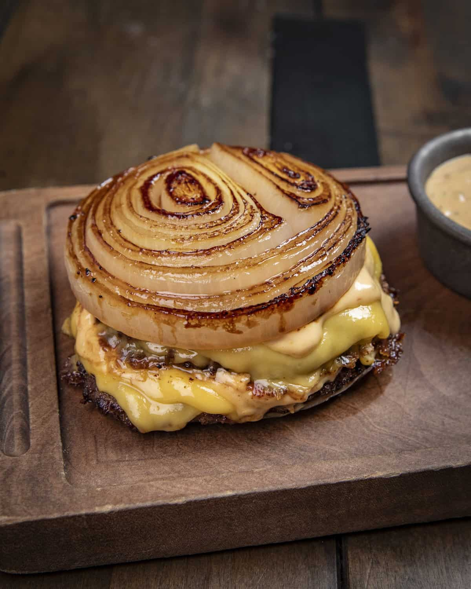

Flying Dutchman Burger

Description
The Flying Dutchman burger is two smashed patties with a secret sauce in onion slice buns. While being a mess to eat, it is delicous, especially for true onion lovers.
Ingredients
- 1 large white onion
- 3/4 pound of ground beef round
- 1 teaspoon kosher salt
- 1/2 teaspoon black pepper
- 4 slices of American cheese, cut into thirds
- 1/4 cup of Mayonnaise
- 1 tablespoon of ketchup
- 1 teaspoon of mustard
- 1 tablespoon seet pickle relish
Steps
- Cut 4 1/2 inch thick slices from the center portion of the onion and discard the smaller ends for another use. dived beef into 4 portions and form each portion into balls
- Heat a large skillet over medium-high heat. Working in batches, add 2 onion slices to the pan and cook, undisturbed, about 2 minutes. Add 2 of the meat balls and then flatten with a spatula and let cook for 2-3 minutes. Flip both the patties and onions and continue to cook till onion is golden brown
- Add 2 cheese slices to the top of both patties and let melt. Place one patty onto one of the onion slices then layer on the other patty. Place the last onion slice on top and then remove from pan and set aside. Repeat with the remaining onions and meat patties.
- Combine mayo, ketchup, mustard, and pickle relish in a small bowl and stir well. Serve with the burgers.